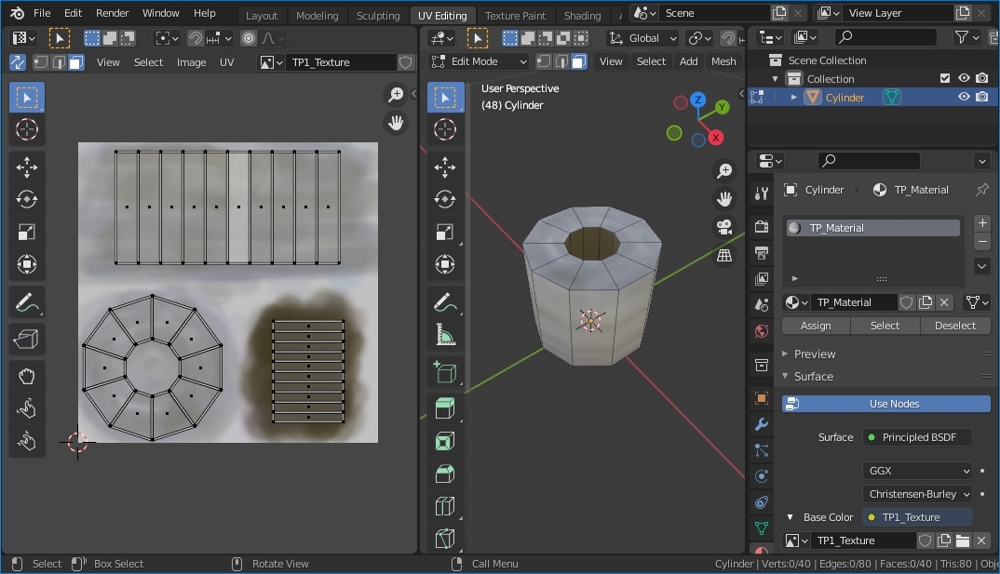
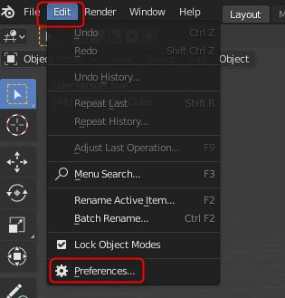
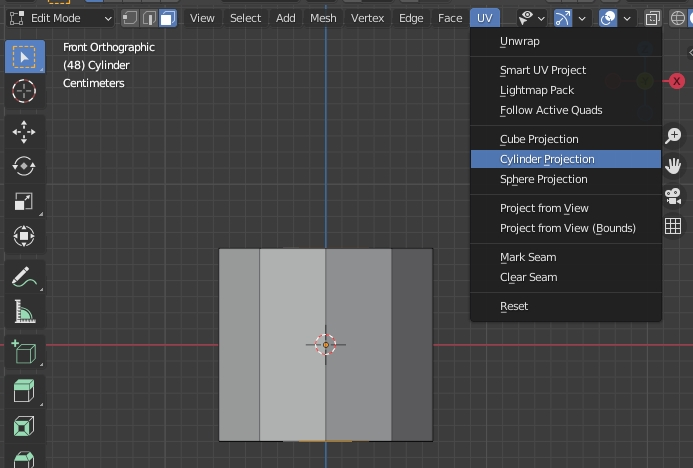
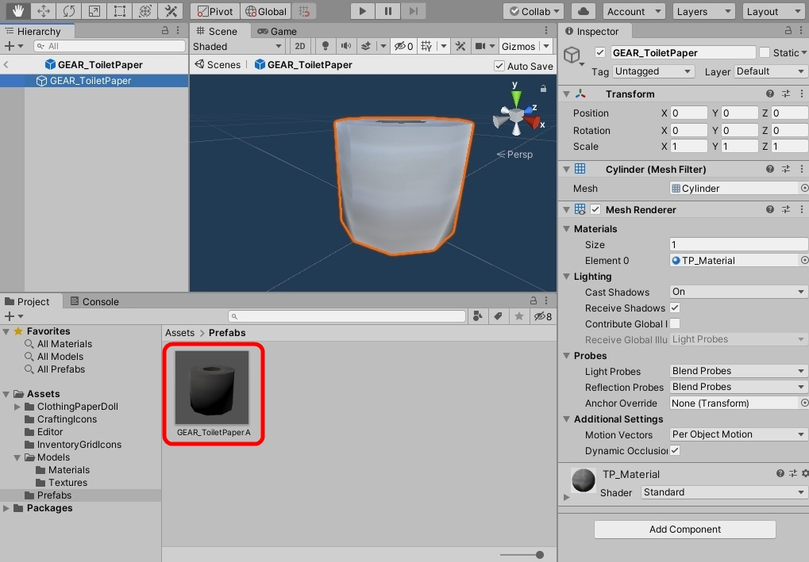

（実は、ほとんどの必要な情報は既に https://github.com/ds5678/ModComponent/tree/master/docs/
にあります。
チュートリアルも https://github.com/ds5678/ModComponent/blob/master/docs/Item-Mod-Tutorial.md
にあります。
しかしそれを読んだだけではまだ理解できない人のために、ここではもっとUnityビギナー向けの詳しい手順を書きます。）
アイテムMODを作るのに必要なのは、素材となる3Dモデルや2D画像を用意してから、Unityで少し作業をするだけです。
しかし素材を作ることができる人であっても、今までUnityを使った事がなければ、凄く複雑で難しそうだと思って諦めてしまうかもしれません。
実際には、ModComponentを使えばUnityで行う操作はいつも同じ単純な手順なので、このガイドと同じように操作するだけで短時間で簡単にできま
す。
このチュートリアルは、3Dソフトウェア(Blender)とUnityのインストールをして、実際にモデルを作成してからゲームに導入するまでです。
Blenderの操作は詳しく説明するときりがないので、今回のチュートリアルでは簡単なモデルしか作りません。
また、衣類機能や、音源機能は省略します。
アイテムにはゲームで通常表示される名前とは別に、Unityで利用する為のプレハブ名が必要です。
これは「GEAR_」から始まる必要があるので、今回は「GEAR_ToiletPaperA」とい うプレハブ名にします。
この「ToiletPaperA」という名前は重要なので忘れないでください。
Modアイテムは、3Dモデル、2Dアイコン、翻訳テキストなどのファイルをそれぞれ用意して、
それからUnityを用いてそれらを1つにまとめたアセットバンドルにします。
（複数のアイテムを作った場合でも１つのアセットバンドルになります。）
そのアセットバンドルのファイル名は重要ではありませんが、今回は「toiletpapermod」に します。

今回は作業用フォルダとして「D:\Mod_TP」フォルダを使うと仮定して説明します。
実際には作業用のフォルダをあなたの好きな場所に任意の名前で作ることができます。
次に、そのサブフォルダに、各種作業用のフォルダを下記のように作成して下さい。
これらのフォルダ名は重要ではありません。実際には任意の名前に変更できます。
さらに、「Items_TP」のサブフォルダとして「auto-mapped」「blueprints」 「gear-spawns」
を作成して下さい。
これらの3つのフォルダ名は重要なので変更できません。


Blenderに慣れていないユーザーは（手順7.1）に進んで下さい。
そうでない場合は、7.1から7.8までの手順はBlenderの解説なので、読む必要はありません。
普通にBlenderで作るだけですが、最初は単純なモデルでテストします。
UVとマテリアルとテクスチャも、簡単に済ませます。カメラやライトは必須ではありません。
BlenderファイルのままでもUnityに使用できますが、今回は必要なオブジェクトだけをFBXにエクスポートしま
す。
今回の作成したモデルは下記の通りです。

以下のページに行きます。
https://www.blender.org/download/lts/2-93/
通常はページ上部のボタンを使ってWindowsストアかSteamから入手します。
それらを使いたくない場合はその下部にある2.93.7のリンクを使用してダウンロードします。
インストールして次のステップに進みます。
起動したら、中央にスプラッシュスクリーンというものが表示されていますが無視します。

周囲のなにもない領域をクリックして、スプラッシュスクリーンを閉じて下さい。
ウインドウ最上部にトップバーがあり、メニューなどが並んでいます。
ワークスペースのボタンが複数あり、最初は「Layout」（レイアウト）ワークスペースが選ばれています。
ウィンドウの内側は複数のエリアに区切られていて、それぞれが別の種類のエディタが表示されています。
エリアの左上のボタンはエディタの種類を変更するためのものです。
一番広く表示されているエリアは「3D Viewpoint」です。
そのエリアの上端にはヘッダーがあり、左端にはツールバーがあります。（ツールバーの表示・非表示の切り替えショートカットキーは［T］です。）
マウスカーソルが3Dビューポイントのエリア内にある時の操作を練習して下さい。
（操作のヒントが、ウィンドウ下端のステータスバーに表示されています。）
最初はツールバーの「選択」ツールが選ばれているので、エリア中央の箱オブジェクトを左マウスボタ
ンクリックするとそれを選択できます。
選ばれたオブジェクトはオレンジ色で強調表示されます。
箱の近くにあるカメラやライトなどの別のオブジェクトも、同じように左クリックで選択できます。
周囲の何もない部分をクリックすると選択が解除されます。
マウスホイールを回転させると、視界がズームイン／ズームアウトします。
マウスホイールを抑えたままマウスを動かすと、視野を回転できます。
[Shift]キーとマウスホイールを抑えたままマウスを動かすと、視点を移動 できます。
[Home]キーを押すと、全てのオブジェクトが見えるように視野が変更されます。
いずれかのオブジェクトを選択してから[テンキー ピリオド]キーを押すと、そのオブジェクトが視界の中心になりま す。
注意：自分がどこを見ているのかわからなくなったら、[Home]キーを押して下さい。
最初から表示されている3つのオブジェクト（箱、カメラ、ライト）を全て削除してください。
ヘッダーのSelectメニュー ＞ All コマンド （ショートカット： [A] キー）
全てのオブジェクトが選ばれます。アウトライナーエディターでもそれを確認できます。
全てを削除するために、 ヘッダーのObjectメニュー ＞ Delete コマンド （ショートカット：[X]キー、 または[Delete]キー）
全てのオブジェクトが削除されました。
Blenderは最初は英語表示になっています。表示言語を変更します。

Editメニュー ＞ Preferenceコマンド

Interface ＞ Translation ＞ Language ＞ 日本語（Japanese）
Affect（影響）のチェックボックスを全てオンにします。
X軸とY軸の交点に3Dカーソル（赤と白の円）があります。
そこに、トイレットペーパーの原型になる円柱を作成します。

Add ＞ Mesh ＞ Cylinder （追加 ＞ メッシュ ＞ 円柱）

3Dカーソルがある場所に円柱が追加され、それが選択された状態になっています。
その直後に、追加された円柱に関する設定を変更するパネルが3Dビューポイントの左下に表示されます。
「Add Cylinder」をクリックしてパネルを広げます。円柱の設定を下記のように変更します。
追加された円柱の半径は1mなのでトイレットペーパーとしては大きすぎます。半径0.07m、深さ0.12mに変更します。
頂点の数は最初は32です。しかしThe Long Darkのほとんどのオブジェクトはローポリゴンなので、10角形に変更します。
（参考：コーヒーカップは12角形、ソーダの缶やピーチの缶詰は10角形）
基本的な円柱をもっと編集するために3Dビューポイントをエディットモードにします。
Blenderの3Dビューにはオブジェクトモードとエディットモードがあります。
オブジェクトモード：「立方体、円柱、カメラ、ライト」などのオブジェクトの「作成、削除、移動、回転」などの操作を
するモード。
エディットモード：1つのオブジェクトを構成する「面、線、頂点」などの要素を詳細に編集するモード。
オブジェクトモードで円柱オブジェクトを選んでから[Tab]キーを押して、ビューをそのオブジェクトのエディット
モー ドにします。
（[Tab]キーを押す代わりにヘッダー左上のリストボックスを使ってもモードを変更できます。）

エディットモード状態で、ツールバーの選択矢印ボタンを選びます。
下記のように「Face select」（面選択）ボタンを選びます。

これによってクリックした面を選べるようになります。円柱の一番上の面を選んで下さい。
ビューを回転して、円柱の一番底の面を[Shift]キーを押しながらクリックして選んで下さい。
Shiftキーによって選択対象が追加され、2つの面が両方とも選ばれている状態になります。
選んだ面に対して、Face ＞ Insert Faces （面の差し込み）コマンドを使います。
マウスを円柱の中央に向かって動かすと選ばれた面の内側に新しい面が作成されます、左クリックすると大きさが確定します。
エリア左下に表示されている「Inset Faces」パネルで下記のように設定します。
差し込まれた面を削除します。
選んだ面を削除するために、[X]キーか[Del]キーを押して下さい。
Deleteする対象の選択リストが表示されたら、「Faces」（面）を選んで下さい。

Blenderのメッシュオブジェクトは複数の面で作られていて、中身は空洞です。
円柱に穴が開いて筒の内側が見えるようになりました。
Blenderの面は表と裏が両方表示されていますが、ゲームでは裏面は透明になって表示されません。
ゲームにあわせるために、Blenderも裏面を表示しないように設定します。
上の図のように、ヘッダーにある「Shading」（シェーディング）設定パネルを表示して、
「Backface Culling」（裏面の非表示）をオンにして下さい。
円筒に穴が空いているので、面を貼って穴を塞ぎます。
エディットモード状態で、ツールバーの選択矢印ボタンを選びます。
下記のように「Edge select」（辺選択）ボタンを選びます。

円筒の穴の周囲の辺を選択します。

10角形の穴なので、辺は10個あります。辺を１つずつ[Shift]＋左クリックで
選択して10個すべての辺を選びます。
（または、[Alt]＋左クリックで円状の10個の辺を一度に選びます）
Shiftキーを使って上面と下面とにある辺を同時に20個選びます。
Edge ＞ Bridge Edge Loops（辺 ＞ 辺ループのブリッジ）

上の円と下の円（実際にはどちらも十角形）との間に新しい筒状の面が作成されます。
これがトイレットペーパーの紙芯の内側です。
[Tab]キーで、エディットモードからオブジェクトモードに戻ります。
オブジェクトの作成が終わったのでファイルを保存します。
File ＞ Save

保存するフォルダは「D:\Mod_TP\Working」
ファイル名は「TP01.blend」にします。この名前は重要ではありません。
Blenderでオブジェクトに2Dの画像（テクスチャ）を貼り付けるために、
3Dのメッシュオブジェクトの「展開図」を作ります。（完成図は手順7.0を参照）
トップバーでワークスペースを「UV Editing」に切り替えます。
3Dビューポートのエリアが左右に分割され、左側にUV Editorのエリアが表示されます。
3Dビューポート（右側のエリア）で、全てを選択します。（ショートカット：[A]キー）
選択された部分のUVマップが左側のエリアに表示されます。

円筒の穴と穴とを繋いで作成した新しい筒は、そのUVも穴と穴とをつなぐ形で作成されています。
その部分のUVを塗りやすいように別の位置に移動します。
下記のように3Dビューで選択ツールを選び、面選択モードにします。
[Shift]キーか[Alt]キーを使い、円筒の内側の面を10個全て選択します。
左側のエリア（UV Editor）に選択部分のUVだけが表示されるようになりました。
選択された円筒のUVが塗りにくい形状をしているので、平面的な展開図に変更します。

面が選択された状態のまま、ビューポートギズモの[-Y]ボタンを押します。（ショートカットキー：[テンキー 1]）
視点が変更されて、円筒形を真横から表示されます。
選択中の円筒形のUVを展開しなおします。

UV > Cylinder Projection （UV ＞ 円筒状投影）
下記のようにCylinder Projectionの設定をします。
10個の面が横に並ぶように展開されます。
左側のエリア（UV Editor）で、選択ツールのUV選択モードを「Island」（島）にします。

UV Editorエリアに表示されている10個の長方形のうち、どれか１つをクリックすると10個全てが選択されます。
島選択は、連続しているUVを一つにまとめて選択するためのモードです。

島が選択されてオレンジ色になったら、ツールバーの「Move」（移動）ツールを選びます。
島を移動するには、島の中央に表示された白い円をドラッグします。
島を一時的にグリッドの外に移動して下さい。
島の中央に表示された緑色と赤色の矢印は、選択部分を縦や横に限定して移動させたい時に使用します。
3Dビューポートエリアで全てを選択します。（Select > All 、または [A]キー）
UV Editorに全てのUVが表示されるようになります。

UV Editorで島選択モードを使用して、上のサンプルのようにUVを移動、サイズ変更してください。
ドーナッツ形状の２つのUV島を同じ位置に移動して重ね合わせます。
先程グリッドの外に移動させた円筒部分のUV島をグリッドの空いている場所に移動します。
この島を選んでいる時にツールバーの「Scale」を選び、白い円をドラッグしてサイズを変更します。

島を選択している時に、ツールバーの「Rotate」ツールを選ぶと、白い円をドラッグして島を回転できます。
その時に[Ctrl]キーを押しながらドラッグすると角度を5度ずつに制限できます。
または、左下の「Rotate」パネルで角度を直接入力できます。
最終的にUVがグリッドエリアからはみ出さないようにしてください。

UVの編集が完了したら、UVレイアウトをPNG画像としてエクスポートします。
UV > Export UV Layout
下記のようにオプションを設定します。
sizeは実際のテクスチャのサイズと同じサイズにします。今回の例は、1024*1024です。

保存するフォルダは「D:\Mod_TP\Working」
ファイル名は「TP01_UV.png」にします。この名前は重要ではありません。実際には自由な名前にできます。
テクスチャは他のアイテムにあわせて1024x1024程度にします。
マテリアルの設定はUnityで行うので細かい設定は必要ありません。
上のセクションまでに作成したオブジェクトにテクスチャとマテリアルとを設定します。
UVエディターで、テクスチャ画像を新規作成します。
ヘッダーの「＋ New」ボタンを押します。

下記のように設定して下さい。Colorは白にします。

新しい画像が作成されました。まだ白紙ですが、最初に保存します。
Image > Save As
保存するフォルダは「D:\Mod_TP\Working」
ファイル名は「TP1_Texture.png」にします。この名前は重要ではありません。実際には自由な名前にでき ます。

プロパティエリアで、マテリアルプロパティを選択します。
「＋ New」ボタンを押して新しいマテリアルを作成します。
マテリアルの名前ボックスに「TP_Material」と入力します。
Base Colorの丸いリンクボタンを押して、「Image Texture」（画像テクスチャ）を選択します。

「Base Color」の下の「Open」をクリックします。
先程保存しておいたテクスチャ「TP1_Texture.png」を開きます。
Base Colorに反映されます。

保存されたUVレイアウト画像とテクスチャ画像の２つのPNGを使って、ペイントソフトを使ってテクスチャを直接描くこ
ともできます。
しかし、今回の例ではBlenderで直接簡単なペイントをします。
トップバーで「Texture Paint」ワークスペースを選択します。
左右のエリアがペイントモードになり、どちらでもTP1_Textureにペイントできます。
「ドロー」ツールが選ばれています。
「ドロー」ツールで右クリックすると、筆の設定を変更できます。
通常は「Mix」でペイントします。
3Dビューポートのシェーディングボタンを「マテリアルプレビュー」モードにすると、オブジェクトにライトが当たっ た状態をプレビューできます。

ペイントが終わったら、テクスチャ画像（TP1_Texture.png）を上書き保存します。
アイテムの外見がもっと良くなるように編集しましょう。
「Layout」ワークスペースで、オブジェクトモードにします。（ショートカット：[Tab]）

トイレットペーパーのオブジェクトを選んで、Object ＞ Shade Smooth コマンドを選びます。

面の影がスムーズになりますが、見た目が悪いです。

「Object Data Property」パネルを選択し、「Auto Smooth」をチェックします。
角度のボックスを変更すると、影が改善される角度を探します。
レイアウトワークスペースで、オブジェクトにします。
トイレットペーパーのオブジェクトを選んでから、右上のギズモの赤いXをクリックします。（ショートカット：[テンキー 3]）
視線が横方向からになります。
移動ツールを選び、トイレットペーパーオブジェクトの「上向き青色矢印」を上にドラッグします。

上の図のように、トイレットペーパーの底面とY軸の位置を揃えてください。
最後に、オブジェクトの原点やサイズを適用します。
位置が決定したら、Object ＞ Apply > All Transforms を選択します。
これによって、オブジェクトが移動した事が反映されます。
以上で、Blenderでの編集は終わりです。
ファイルを上書き保存してください。
今回の例のトイレットペーパーには関係ありませんが、BlenderとUnityではXYZの軸の方向が異なるので
通常はApplyをするより先にオブジェクトの正面の方向をUnityにあわせるためにオブジェクトをZ軸で180度回転する事をおすすめします。
BlenderファイルのままでもUnityで使用できますが、今回はFBXにエクスポートします。
ファイルメニュー＞エクスポート＞FBXを選択します。

下記のスクリーンショットのように設定します。

JSONファイルはModアイテムがどのように動作するかの詳細を書くためのファ イルです。
アイテム1つにつき1つのアイテムJSONファイルが必要です。
アイテムのJSONは「auto-mapped」フォルダに保存します。
作成するModアイテムの名前に合わせ、テキストエディタでファイルを作成します。
拡張子は .txt ではなく .json
に変更します。
例えば、アイテムの名前が「GEAR_ToiletPaperA」の場合、JSONファイルの名前は「GEAR_」を取り去って 「toiletpapera.json」
にしなければいけません。
ファイル名は全て小文字にする必要があります。
実際に Mod_TP\Items_TP\auto-mapped\toiletpapera.json を作成して下
さい。
それぞれのJSONの説明は下記のページにあります。
下記のページから必要なテンプレートを探して、自分のJSONファイル（toiletpapera.json）にコピーして使います。
今回は ModGenericComponent と ModTinderBehaviour を
使います。
必要な部分をコピーしてから、次の項目を変更する必要があります。
toiletpapera.jsonファイルの内容を編集してください。
オブジェクトを追加したり削除したりする時は、カンマの位置に注意して下さい。
JSON内にはコメントが書けないので、もしテンプレートにコメント部分があったら削除して下さい。
{
"ModGenericComponent": {
"DisplayNameLocalizationId" : "GAMEPLAY_ToiletPaperA",
"DescriptionLocalizatonId" : "GAMEPLAY_ToiletPaperADescription",
"InventoryActionLocalizationId" : "",
"WeightKG": 0.1,
"DaysToDecay" : 0,
"MaxHP" : 100,
"InitialCondition" : "Perfect",
"InventoryCategory" : "Auto",
"PickUpAudio" : "",
"PutBackAudio" : "",
"StowAudio" : "Play_InventoryStow",
"WornOutAudio" : "",
"InspectOnPickup" : true,
"InspectDistance" : 0.4,
"InspectAngles" : [0, 0, 0],
"InspectOffset" : [0, 0, 0],
"InspectScale" : [1, 1, 1],
"NormalModel" : "",
"InspectModel" : ""
},
"ModTinderBehaviour": {
"SuccessModifier" : 35,
"DurationOffset" : 0
},
"ModHarvestableBehaviour": {
"Audio" : "",
"Minutes" : 5,
"YieldCounts" : [2],
"YieldNames" : ["GEAR_Tinder"],
"RequiredToolNames" : []
},
"ModStackableBehaviour": {
"SingleUnitTextId" : "GAMEPLAY_ToiletPaperA",
"MultipleUnitTextId" : "GAMEPLAY_ToiletPaperA",
"StackSprite" : "",
"UnitsPerItem" : 1,
"ChanceFull" : 100
}
}
手順(6-2)でUnityテンプレートから作業用フォルダにコピーした「Mod_TP\Unity\Assets\Localization.json」
を編集 します。
JSONエディタか、単なるテキストエディタで編集できます。
ローカライズJSONの説明は下記にあります。
https://github.com/ds5678/ModComponent/blob/master/docs/Basic-Item-Configuration.md
作成するModアイテムの名前に合わせてJSONの内容を編集します。
「GAMEPLAY_SampleItem」と「GAMEPLAY_SampleItemDescription」
の名前を変更しなければいけません。
アイテムの名前が「GEAR_ToiletPaperA」の場合、「GAMEPLAY_ToiletPaperA」と 「GAMEPLAY_ToiletPaperADescription」
に変更します。
{ "GAMEPLAY_ToiletPaperA" : { "English" : "Toilet Paper Roll", "Japanese" : "トイレットペーパーのロール" }, "GAMEPLAY_ToiletPaperADescription" : { "English" : "Not only used for toilets, can be used as tinder in survival.", "Japanese" : "トイレに使うだけではなく、サバイバルでは火口としても使えます。"}}
下記のリンクから、まずUnity Hubをダウンロード、インストールします。
https://unity.com/download
次に、Unityは最新版ではなくUnity 2019.4.19をインストールします。

インストールの時にLanguage pack（言語パック）を選択できます。
Unityのインストールが完了したら、Unity Hubを開きます。
ProjectのOpen(開く)をクリックします。

前もってUnityテンプレートをコピーしておいた自分のUnityフォルダを開きます。
Unity Hubに新しいプロジェクトができたので、それをクリックして開きます。
Unityエディタの新しいバージョンを確認するダイアログボックスが表示されるので、「Skip new
version」ボタンを押してダウンロードをキャンセルします。
Unityエディターのウィンドウが開きます。ウインドウ内はいくつかのビューに区切られています。
左上にHierarchy（ヒエラルキー）、中央上にScene（シーン）、左下にProject（プロジェクト）、右にInspector（インスペク
ター）があります。
言語パックをインストールしてあれば、Editメニュー＞Preference＞Languagesを開き、言語を選択できます。
BlenderからエクスポートしたFBXファイルを、Unityにインポートします。
プロジェクトビューの「Models」フォルダへ、WindowsファイルエクスプローラーからTP01.fbxファ
イルをドラッグします。
または、プロジェクトビューのModelsフォルダを選び、Assetメニューか右クリックか ら、「新しいアセットをインポート」して、TP01.fbxを選びます。
Modelsフォルダの中にTP01がインポートされてアイコンが表示されます。

Blenderで使ったテクスチャー用のPNGファイルをUnityにインポートします。
プロジェクトビューの「Textures」フォルダへ、WindowsファイルエクスプローラーからTP1_Texture.pngファ
イルをドラッグします。
または、プロジェクトビューのModelsフォルダを選び、Assetメニューか右クリックから、「新しいアセットをインポート」します。

インポートされたモデル「TP01」には、マテリアルが埋め込まれています。それを抽出します。
プロジェクトビューのModelsフォルダを選ぶと、その右側にフォルダの中身が表示されます。
そこからTP01を選択してから、インスペクタビューの「Extract Materials」（マテリアルを抽出）ボタンをクリックします。

抽出先フォルダを選択するウィンドウが表示されたら「Materials」フォルダを選びます。

プロジェクトビューのMaterialsフォルダに抽出された「TP_Material」を選びます。
インスペクタビューで下記のように設定して下さい。

Albedo（アルベド）にはテクスチャにTP1_Textureが設定されているは
ずです。
アルベドのカラーは白、MetallicとSmoothnessの値は0です。
ここで一度、保存しておきましょう。
File＞Save で、 全てを保存します。

Asset/ModelsにインポートされたファイルTP01をHierarchyビューにドラッグします。
HierarchyにゲームオブジェクトTP01のアイコンが表示され、Sceneにモデルが表示されます。

HierarchyのTP01アイコンをAsset/Prefabsにドラッグします。
「Original Prefab」（原型プレハブ）か「Prefab
Variant」（プレハブバリアント）かを選ぶ質問が表示されるので、「プレハブバリアント」ボタンを選択します。
HierarchyのTP01の名前が青い文字になります。そして、Prefabsフォルダの中にTP01が表示されます。
それから、Prefabsの中のTP01の名前を事前に決めていた通りに「GEAR_ToiletPaperA」に変更します。
このプレハブ名はModComponentにとって重要です。
Prefabsの中のGEAR_ToiletPaperAを選択してからInspectorの「Open Prefab」
ボタンをクリックします。
または、GEAR_ToiletPaperAをダブルクリックします。
または、HierarchyのTP01の名前の右にある「＞」ボタンをクリックします。
するとプレハブが開かれてInspectorで編集できるようになります。

GEAR_ToiletPaperAのInspectorの「Add Component」（コンポーネントの追加）ボタンをクリックします。
Physics＞Box Collider（物理＞ボックスコライダー）を選びます。

シーンの中にあるオブジェクトが箱型の緑色の線で包まれます。
コライダーは通常はぴったりのサイズのはずですが、もし大きさを編集したいなら「Edit
Collider」ボタンをオンにしてから、箱の面に表示された緑色の点をドラッグします。

HierarchyのGEAR_ToiletPaperAの名前の左側にある「＜」ボタンをクリックします。

ProjectビューのAssets/InventoryGridIconsフォルダを選択します。
フォルダの中にはテンプレートとして「ico_GearItem__SampleItem.png」という画像ファイルが入っています。（GearItemに
続く文字は2個のアンダースコアです）
このファイル名は重要です。
自分のModアイテムのプレハブ名に基づいた名前に変更する必要があります。
今回の例では、プレハブ名が「GEAR_ToiletPaperA」なので、アイコン名を「ico_GearItem__ToiletPaperA.png」
に変更します。
GearItemの次の文字はアンダースコアが2つ連続している必要があります。

インベントリアイコンについてのもっと詳しい説明は以下のページにあります。
https://github.com/ds5678/ModComponent/blob/master/docs/Basic-Item-Configuration.md
この画像は512*512ピクセルのサイズでなければなりません。
テンプレートのアイコン画像には何も描かれていませんので、自分自身で編集してください。
画像ファイルをWindowsファイルエクスプローラーで表示したいなら、Projectビューの
ico_GearItem__ToiletPaperA.pngを右クリックしてか ら「Show
in Explorer」（エクスプローラーで表示）を選んでください。

最も簡単な方法は、BlenderやUnityのスクリーンショットをとって、2D画像編集ソフトでアイテムの画像をトリミングする事でしょう。
Unityでスクリーンショットを撮影する手順のヒントは下記の通りです。
画像が正しく保存されれば、InventoryGridIconsフォルダの中の「ico_GearItem__ToiletPaperA.png」 が更新されます。
今回の例では、アセットバンドルの名前は「toiletpapermod」にするつもりです。
Projectビューで「Assets」フォルダを選択してから、その中にある「Localization」ファイルアイコンをクリックします。
InterloperのAssetBundleのドロップダウンリストボックスで「New」を選びます。

新しい名前として「toiletpapermod」と入力します。

同じようにして、「InventoryGridIcons」フォルダと「Prefabs」フォルダのアイコンの２つを選んで、そららの
AssetBundleの名前も「toiletpapermod」 にします。
注意：それらのフォルダに入っているファイルのAssetBundleの名前を変更する必要はありません。
これがUnityでの最後の作業です。
Assets（アセット）メニューの「Build AssetBundles」コマンドを選びます。

Unityテンプレートによって「Mod_TP\Unity\AssetBundles」フォルダが作成されて、アセッ
トバンドルファイル がその中にエクスポートされます。
AssetBundlesフォルダの中には複数のファイルが保存されますが、「toiletpapermod.unity3d」という名前
の１つのファイルだけが ModComponentに必要です。
ModComponentファイルはZIPファイルをリネームして拡張子を「.modcomponent」に変更しただけのファイルです。
必要なファイルを「Items_TP」フォルダに集めて、最初にZIPを作る必要があります。
Mod_TP\Unity\AssetBundlesフォルダにエクスポートされたtoiletpapermod.unity3dを、
Mod_TP \Items_TP\auto-mappedフォルダにコピーします。
この時、auto-mappedフォルダには（手順8.1）によって既にtoiletpapera.jsonが保存されて
いるはずです。
今回の例では、ModComponentファイルを簡単に作成するツール「ModComponent Extractor」を使います。
次のステップ(10.3)に進んで下さい。
しかし、もし自分でZIPファイルを作成したければ、以下の手順に従って下さい。
「Items_TP」フォルダの中の3つのフォルダを、「Items_TP.zip」という名前で圧縮します。
注意点として、Items_TP.zipの中にはItems_TPフォルダは入れてはいけません。「auto-mapped」「blueprints」 「gear-spawns」の3つのフォルダが直接ZIPの中に置かれていなければいけません。
ZIPファイルが作られたら、その拡張子を.zipから.modcomponentに 変更します。
ModComponentExtractor is an application for making and extracting '.modcomponent'
files used by ModComponent.
（ModComponentExtractorは、ModComponentが使用する「.modcomponent」ファイルを作成および抽
出するためのア プリケーションです。）
下記のリンクを開き、最新のリリースをダウンロードします。（WindowsユーザーはModComponentExtractor_Win64.zipが
必要）
https://github.com/ds5678/ModComponentExtractor
ダウンロードされたzipファイルの中からModComponentExtractor.exeをMod_TPフォ
ルダに抽出してください。
Windowsファイルエクスプローラーで、Mod_TPフォルダ内のItems_TPアイコンをModComponentExtractor.exeに ド ラッグしてください。

ModComponentExtractorの黒いウインドウに白い文字で「Succeeded」と表示されていれば成功です。
黒いウインドウを閉じて下さい。
Mod_TPフォルダの中に、Items_TP.modcomponentという名前のファイルがあるはずです。
それが完成されたアイテムMODです。
自分でアイテムModを作りたいと考えているあなたは、既に他のTLDのModを使用しているはずです。
だからここでは基本的なModのインストールについて詳しくは説明しません。
基本的なModのインストールの説明は、https://xpazeman.com/tld-mod-list/
にあります。
以下のMODを全てインストールして、エラーなしで動作するようにしてください。
以下のMODは必須ではありませんが、便利なので推奨します。
The Long Darkのゲームプログラムが終了している事を確認します。
他のModと同じように、自分のMod(Items_TP.modcomponent)をTheLongDark\Modsフォルダにコピーします。
The Long Darkを起動します。
MelonLoaderのウィンドウで、エラーが無いかどうかを見て下さい。
ゲームのウィンドウでMelonLoaderが隠れた時は、Alt+Tabキーなどを使ってウィンドウを最前面にしてくだ
さい。
もしエラーがあれば、JSONやUnityでの作業に間違いがあります。
フォルダやファイルの名前やそれらの階層構造、プレハブなどの名前の間違いやアルファベットの大文字小文字やミスタイプに注意して下さい。
間違いを見つけて修正し、アセットバンドルとModComponentを作り直し、修正されたMODを再インストールしてください。
エラーがなければ、ゲームを起動してからデベロッパーコンソールを開きます。（F1 キー）
「add toil」のように名前を途中まで入力したら、[Tab]キーでアイテム名の残りの文字が「オートコンプリー
ト」されます。
それからEnterキーでコマンドを実行します。インベントリにアイテムが追加されていれば成功です。
もしアイテム名をオートコンプリートできない場合、Modに何かのエラーがあります。
アイテムを正常に操作できるかと保存できるかどうかをチェックします。
JSON（toiletpapera.json）で設定されたアイテムの機能が正常に働くかチェックします。

MODのテストが全て終わったら、ゲームプレイ中にプレイヤーがアイテムを入手できるようにする設定をします。
次の2種類があります。
下記のページに詳しい情報があります。
https://github.com/ds5678/ModComponent/blob/master/docs/Gear-Spawns.md
必須MODのCoordinates Grabberを使うので、その使用方法をMODの配布ページで確認してください。
https://github.com/ds5678/Coordinates-Grabber
Mod_TP\Items_TP\gear-spawnsフォルダの中にテキストファイルを作る必要があります。
ファイルの個数やファイル名は重要ではありません。
今回の例では、以下の2つのファイルを作成します。
内容は空のままでかまいませんので、これらの2つのファイルを実際にそこに保存して下さい。
TP-LootTables.txtをテキストエディタで編集して下さい。
下記URLに必要な情報があります。
https://github.com/ds5678/ModComponent/blob/master/docs/Loot-Tables.md
下記はTP-LootTables.txtのサンプルです。
これは浴室のキャビネットと釣り小屋の引き出しからトイレットペーパーが発見される確
率を設定します。
手順13.0の説明に従って「GEAR_ToiletPaperA」の名前を省略可能なので「ToiletPaperA」と記述しています。
コード
loottable=BathroomCabinet item=ToiletPaperA w=10 loottable=FishingDrawer item=ToiletPaperA w=3
オプションとして：下記のURLにテンプレートがあります。
全ての行をコピーして自分のTXTファイルに貼り付けて使えます。
https://github.com/stmSantana/ModComponentDocs/blob/main/TutorialTP/Samples/template-LootTables.txt
ほとんどの容器の名前は<LootTableName>を見れば理解できるはずです。
しかしCargoから始まる名前はわかりにくいかもしれません。それらはTimberwolf Mountainに散在している大きな箱です。
ゲーム中にCoordinates Grabberをloot
tableモードで使用すれば、マウスカーソルの下にある容器の<LootTableName>を調べられます。
TP-Scenes.txtをテキストエディタで編集して下さい。
下記URLに必要な情報があります。
https://github.com/ds5678/ModComponent/blob/master/docs/Scenes.md
下記はTP-Scenes.txtのサンプルです。
これはキャンプオフィスにトイレットペーパーがスポーンする確率を設定します。（ファイルキャビネットの上に2箇所。確率
は50%と100%。）
scene=CampOffice item=GEAR_ToiletPaperA p=4.6833,1.8265,-3.3410 r=0.0000,119.9167,0.0000 c=50 item=GEAR_ToiletPaperA p=4.6700,1.8265,-3.1150 r=0.0000,55.7875,0.0000 c=100
オプションとして：下記のURLにテンプレートがあります。
全ての行をコピーして自分のTXTファイルに貼り付けて使えます。
https://github.com/stmSantana/ModComponentDocs/blob/main/TutorialTP/Samples/template-Scenes.txt
ほとんどの主要な「シーン」の名前はコメント行の<SceneName>と付属説明を見れば理解できるはずです。
例えば沿岸ハイウェイの屋外のシーン名は「CoastalRegion」です。
グレイマザーの家の屋内のシーン名は「GreyMothersHouseA」です。
しかし一般的な洞窟やキャビンのA、B、Cのような違いは、名前を見てもわからないでしょう。
Coordinates Grabberでそれを調べる必要があります。
ゲームプレイを開始して、自分のMODのアイテム（ToiletPaperA）をデベロッパーコンソールの add
コマンドで入手してください。
それから、アイテムをスポーンさせたい位置にそれを自分で実際に配置して下さい。
Coordinates GrabberをSceneモードで使用すれば、マウスカーソルの下にあるアイテム
の<SceneName>を調べられます。
次に、Sceneモード中に［右 Ctrl］キーを押せば、その<SceneName>
がクリップボードにコピーされます。
それをテキストエディタでTP- Scenes.txtの正しいScene位置に「貼 り付け」して下さい。
次に、Coordinates GrabberをNameモードで使用して［右 Ctrl］
キーを押せば、マウスカーソルの下にあるアイテムの完全なアイテムスポーン定義がクリップボードにコピーさ
れます。
それをテキストエディタでTP- Scenes.txtの正しいSceneの下の行に「貼 り付け」して下さい。
2つのテキストファイルを保存したら、もう一度ModComponentを作ります。（手順10.3.2.）を参照。
それから、再び完成したMODを、もう一度インストールします。（手順11.）を参照。
それから、もう一度MODのテストをします。（手順12.）を参照。
新規のゲームを開始します。ミステリーレイクのキャンプ・オフィスに行きます。
（手順13.3で、そこにスポーンを設定しました）
エラーが発生しないで、キャンプ・オフィスのファイルキャビネットの上にトイレットペーパーが1つ以上スポーンしていれば成功です。
おめでとう！これでアイテムMODが完成しました。
完成した「Items_TP.modcomponent」を公開できます。
別の新しいアイテム（半分使用されていて細くなったトイレットペーパーロール）として「ToiletPaperB」という新しいオブジェクトを
Blenderで作って、自分のMODに追加してみてください。
この場合、１つのアセットバンドルファイルに2つのプレハブが入ることになります。
アイテムJSONのtoiletpaperb.jsonを新たに作る必要があります。
翻訳JSONであるLocalization.jsonのファイルは1つだけのままです。その中に2つ目のアイテムの設定を追加します。
gear-spawnsのテキストファイルの数は増やしても大丈夫ですが、今回の例では既存のファイルに何行か追加するだけにします。
(終わり)